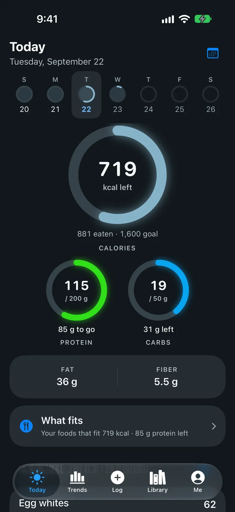
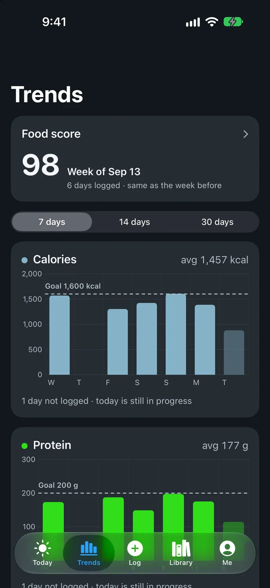

MacroMaxx
A macro tracker that runs natively on my iPhone, and works offline.
- Role
- Solo: design and code
- Platform
- iPhone, plus a web version
- Status
- In daily use · build 17
- Built with
- SwiftUI, SQLite, HealthKit, WidgetKit, Python


The problem
Every tracker I tried either wanted a subscription, needed a connection to search foods, or quietly showed a zero when it simply didn't know a number.
I wanted something fast and honest that I'd actually open three times a day. So I built my own, then kept going until it was better than the apps I'd stopped using.
What I built
- Offline search. The full USDA Branded Foods database lives on the phone in SQLite, alongside USDA's common foods. A weekly job checks for new USDA releases.
- Barcode scanning with a real score. Scans pull from Open Food Facts. When a product has no published grade, the app calculates Nutri-Score 2023 itself, then combines it with processing level, additives and organic status into a 0–100 score.
- Restaurant menus. 1,054 items from seven chains, read from their own nutrition pages and PDFs. Every item keeps the page it came from and the date it was read.
- The rest of daily life. Weigh-ins from Apple Health, a home-screen widget, a "What fits" view that lists foods that fit what's left today, and a list of foods to avoid that flags ingredients on a scan.
The hard parts
Porting Nutri-Score, rule for rule
I ported Open Food Facts' own Nutri-Score 2023 implementation to Swift, including the special rules for drinks, cheese, fats and red meat. To check it, I compared my grades against the ones Open Food Facts publishes. They matched on 184 of 185 products that have categories, and 48 of those became a permanent test fixture.
Never showing a fake zero
A food with no fiber listed hasn't told you it has zero fiber. The data model keeps "unknown" and "zero" separate all the way through, scaling stays unit-safe, and the screen says when a total is missing data. The scanner never calls a product "safe". It lists what it could check and names what the label couldn't answer.
Shipping to my phone without a paid developer account
Apps signed with a free account expire after seven days. A daily background job on my Mac re-signs the app when fewer than two and a half days are left. Every install backs up the app's data first and compares file hashes afterwards, so a build can never lose my history. I've shipped seventeen builds this way.
Next
Camera scanning on the phone itself, so far tested on the simulator, and more restaurant chains as they publish ingredient-level data.